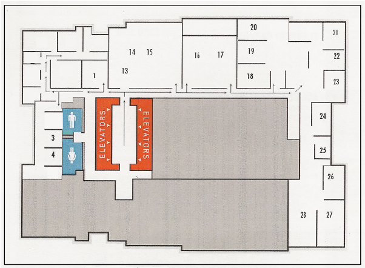

CHARLOTTE STREET FOUNDATION OPEN STUDIOS EVENT

1 Katerina Guillermo
2 Madison Mae Parker
3 Jessica Ayala
4 Sheri Hall
6 Lavinia Roberts
7 Kaia Nutting
8 Kevin Kilroy
9 Lilly McElroy
10 Kiki Serna
11 Jessica Kincaid
12 Laurena Roytberg
13 Jason Zeh
14 Tristian Griffin
15 Daniel Hogans
16 KC Public Theatre
17 Mazzy Mann
18 JE Baker
19 Fuko Ito
20 Elizabeth Stehling
21 Alicen Lundberg
22 Luke Haynes
23 Benjamin Wills
24 Iliann Alvarez
25 Elizabeth Derstine
26 Ruben Castillo
27 Bo Hubbard
28 Nazanin Amiri